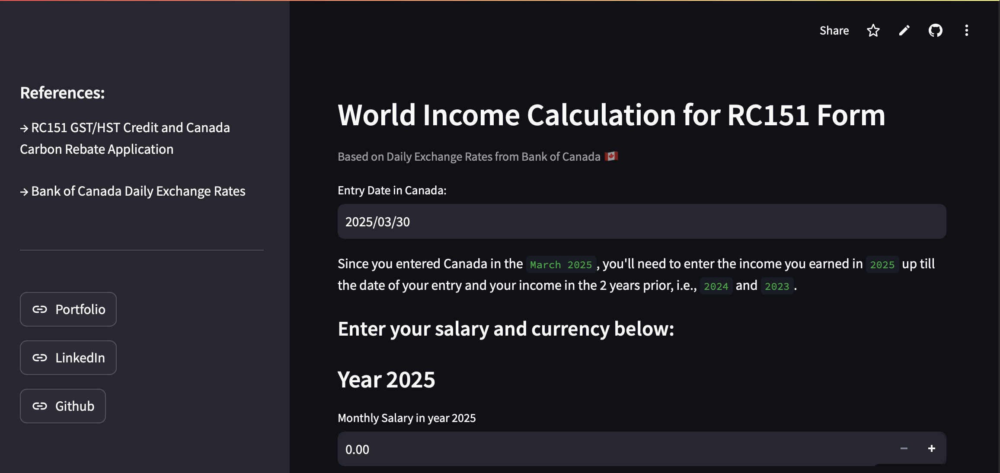

Summary
I turn lending and treasury data into forecasts, pipelines, and decisions.
Six years across J.P. Morgan, Bloomberg, and Canadian Banking building the SQL and Python that forecasting runs on, and the automation that turns manual reporting into something reliable. Below are a few things I’ve built in my own time.
Selected figures
2%
short caption — what this number measures
+ Behind the number
Projects
Things I’ve built with data

RC151 Assistant
A Streamlit web app that walks users through the CRA’s RC151 benefit form as a guided, question-by-question assistant.
Open the app ↗Apple Music SQL Analysis
Exploratory SQL over an Apple Music dataset: surfacing listening patterns and catalog trends through queries.
View analysis ↗IMDb Dataset Analysis
Storytelling with data: an IMDb dataset explored in SQL and brought to life as a Tableau narrative.
View story ↗Tools & Technologies
Day to day I work with SQL Server and Python script building data pipelines and transformation logic across large mortgage, treasury and financial performance datasets.
Certifications
- dbt Fundamentalsdbt LabsCredential ↗
- Window FunctionsLearnSQL.comCertificate ↗
- Using Python for ResearchHarvardXCredential ↗
- Exploratory Data Analysis in SQLDataCampCertificate ↗
- Financial & Valuation ModelingWall Street PrepCredential ↗
- Anaplan Level 2 Model BuilderAnaplan